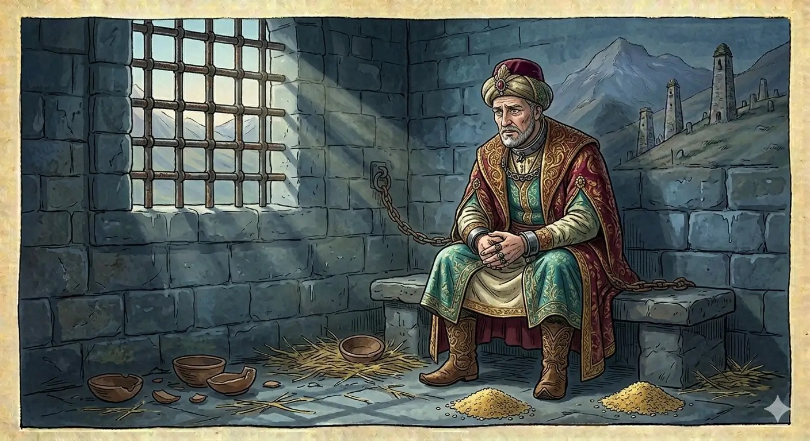

И.А. Дахкильгов. Хьехаме дувцарш - поучительные рассказы-притчи.
И.А. Дахкильгов. Хьехаме дувцарш - поучительные рассказы-притчи. Из ингушского фольклора.

Кхел нийса хила йоагӀа
Цкъа Маддана базар тӀа цӀи йолча наьха къонахчо къоал даь хиннад. Лаьца чу а велла, кхел Ӏохоаяьй. Цо соцадаьд, къуна кулг дӀадаккха аьнна. ТӀаккха баха хиннаб, йоах, Мохьмад-пайхамар волча (Далла салам лолда цунна). Дийхад цунга, иштта тоам боаца гӀулакх хиннад, цӀи йолча наьха саг ва, цудухьа из кхел йохаю ялара Ӏа, аьнна. ТӀаккха аьннад, йоах, Мохьмад-пайхамара: "Миска саг хилча, кхел ше ма йоаггӀа а еш, цӀи йолча наьхах хилча, кхел харцахьа а еш дола хабар оаш сона тӀа хӀана дахь? Мискачо ший моцалла де а тарлора из къоал, хӀаьта оаш вувцаш вола саг торо йолаш ше воллашехьа къоалага ваьнна ма хиннавий ший цӀаьрматалах. Цунна-м шаккхе а кулг дӀадаккха доагӀар! Дола, дӀадовла сона гучара, кхел йохаергьяц аз. Кхел нийса хила йоагӀа".
РУССКИЙ
Суд должен быть справедливым
Некий именитый человек на мединском базаре совершил кражу. Посадили его в темницу и стали вершить суд. Постановили отрубить ему кисть руки. Нашлись ходатаи. Они побежали к пророку Мухаммеду и попросили его отменить это решение суда. При этом они сослались на то, что этот вор - знатного происхождения. Пророк их упрекнул: - По-вашему, если бедный человек, то суд над ним надо вершить по справедливости, а если именитый, то нет? Бедный, может, совершил бы кражу с голоду, а этот именитый человек совершил ее из жадности. Да ему полагалось бы отрубить не одну, а обе кисти рук. Идите от меня, я не отменю решение суда. Суд должен быть справедливым.
ENGLISH
Justice must be done
A certain man of high standing committed a theft at the Medinan market. He was thrown into prison and brought to trial. The court ruled that his hand should be cut off. Some intercessors came forward. They rushed to the Prophet Muhammad and asked him to overturn the court's decision. In doing so, they pointed out that this thief was of noble birth. The Prophet rebuked them: 'Do you think that if a man is poor, he should be judged fairly, but if he is of high standing, he should not? The poor man might have stolen out of hunger, but this man of high standing stole out of greed. He deserves to have not just one, but both hands cut off.' Go away from me; I will not overturn the court's decision. Justice must be done.
НОХЧИЙН
Кхел нийса хила йогӀу
Цкъа Маддана базар тӀехь цӀе йолчу нехан къонахчо къола дина хилла. Лаьцна чу а воьллина, кхел йина. Цо сацийна, къуна куьг дӀадаккха аьлла. ТӀаккха бахан хилла, боху, Мохьмад-пайхамар волча (Далла салам лойла цунна). Дехна цуьнга, иштта там боцу гӀуллакх хилла, цӀе йолчу нехан стаг ву, цундела иза кхел йохийна йелара ахь, аьлла. ТӀаккха аьлла, боху, Мохьмад-пайхамара: "Миска стаг хилча, кхел ша ма йоггӀа а йеш, цӀе йолчу нахах хилча, кхел харцахьа а йеш долу хабар аш суна тӀе хӀунда дохь? Мискачо шен мацалла дина а тарлора иза къола, хӀета аш вуьйцуш волу стаг таро йолуш ша воллушехьа къолага ваьлла ма хилла вуй шен сутаралах. Цунна-м ший а куьг дӀадаккха догӀура! Дуьло, дӀадовла суна гучур, кхел йохор йац ас. Кхел нийса хила йогӀу".
ПОГОВОРКИ
Ахчеи рузкъеи мара кхы хӀама ца гуча нахах бӀехача хӀаман юкъера водаш санна вада веза. От людей, ничего, кроме богатства, не видящих, надо бежать, как от самой большой грязи. You should flee from people who see nothing but wealth in others, as from the worst filth. Ахчий, рицкъий бен кхин хӀума ца гучу нахах боьхачу хӀуман йуккъера водуш санна вада веза.Ахчо сигала бода никъ лехаб. Деньги нашли дорогу на небеса. Money has found its way even to heaven. Ахчано стигла боьду некъ лехна.Базар – шайтӀай поал. Базар – шайтановы игрища. The bazaar is the devil's playground. Базар - шайтӀан пал.Е хьа дикага сатувсаш, е хьа вонах кхераш хилча мара, наха лархӀац хьо. Люди уважают тебя, если только ждут от тебя чего-то хорошего или боятся твоего зла. People respect you only if they expect something good from you, or fear something bad. Йа хьан диканах сатуьйсуш, йа хьан вонах кхоьруш хилчи бен, наха лерина вац хьо.Кхела тӀехьа декхар доагӀа, декхарийна тӀехьа харцо йоагӀа, харцонна тӀехьа даькъазало йоагӀа. Решение суда (местного, медиаторского) влечет за собою долг, долг влечет кривду, кривда влечет позор. A court ruling brings debt, debt brings falsehood, and falsehood brings disgrace. Кхелан тӀаьхьа декхар догӀу, декхаран тӀаьхьа харцо йогӀу, харцонна тӀаьхьа дакъазалла йогӀу.Кхелага даьнна дош – ловзадаьнна пилхьа. Дело, переданное в суд (местный), - шут, пляшущий на канате. A case brought to court is like a jester dancing on a tightrope. Кхеле даьлла дош - ловзаваьлла пелхьо.Оапаш бувцар къаьрача дувнашка воал, къоалаца Ӏемар теш лехаш лел. Лгун учится ложной клятве, вор же ищет лжесвидетеля. The liar learns to swear falsely; the thief looks for a false witness. Аьшпаш буьйцург къерачу дуйнашка волу, къоланца Ӏаьмнарг теш лоьхуш хуьлу.Сага дегӀар молла юхадаккха йишъяц. То, что суждено, мулла не изменит. The mullah cannot change what fate has decreed for a person. Стагана доьгӀнарг моллас йухадаккха йишйац.ТӀехьенна боккха боахам битарал дикагӀа да дика цӀи йитар. Наследникам лучше оставить доброе имя, чем большое богатство. It's better to leave heirs a good name than a large fortune. ТӀаьхьенна боккха бахам битарал диках ду дика цӀе йитар.Хьал долчо аьннар эттад, къечо аьннар эттадац. Сказанное богачом принимается на веру, сказанное бедняком в расчет не берут. What the rich man says is taken as truth; what the poor man says is disregarded. Хьал долчо аьлларг хӀоьттина, къечо аьлларг хӀоьттина дац.Хьо ца вовзача метте хьа кетар я сий долаш, хьо вовзача метте хьа корта ба сий долаш. Где тебя не знают, там чтят твою шубу, а где тебя знают, там чтят твою голову. Where you're a stranger, they honour your coat; where you're known, they honour your character. Хьо ца воьвзачу меттигехь хьан кетар йу сий долуш, хьо воьвзачу меттигехь хьан корта бу сий долуш.ЧӀоагӀачарца довнаш ма даха, бӀаьхийчарца кхеле ма аха. С сильным не враждуй, с богатым не судись. Don't feud with the strong, and don't take the wealthy to court. ЧIогIачаьрца девнаш ма даха, бехаш болу чӀаьрца кхеле ма эха.